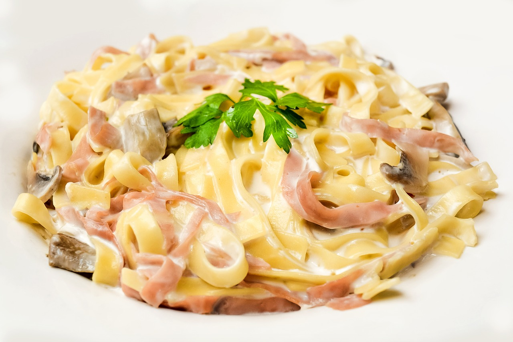

- 400g Spaghetti
- 100g Bacon
- 100g Pecorino or Grana Padano Cheese
- 1 shot Olive Oil
- 2 Eggs
- 1 El Salt
- 1 El Pepper
- Für die Spaghetti Carbonara die Spaghettinudeln zuerst in gut gesalzenem Wasser bissfest (al dente) kochen. Bevor man die Spagehtti abseiht etwas Kochwasser entnehmen und beiseite stellen. Erst danach die Spagetti abseihen und abtropfen
lassen.
- Nun den Speck in kleine Würfel oder feine Streifen schneiden und in einer größeren Pfanne in Olivenöl leicht ausbraten.
- Danach geriebenen Käse und versprudelte Eier der Pfanne hinzugeben. Mit Pfeffer würzen.
- Die Spaghetti auf den Tellern portionieren und gut mit der Sauce übergießen. Nach Wunsch geriebenen Parmesan darüber streuen und servieren.